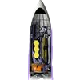

O que é o telescópio espacial James Webb?
O telescópio espacial James Webb (JWST, James Webb Space Telescope) é um telescópio espacial desenvolvido por uma parceria entre a NASA e outras agências espaciais, projetado para observar os objetos e eventos mais distantes no universo, como a formação das primeiras galáxias há 13,5 bilhões de anos.
Além disso, ele também é capaz de detalhar e caracterizar a composição da atmosfera de exoplanetas potencialmente habitáveis, em busca de informações sobre a origem da vida e, quem sabe, futuros alvos para exploração humana.
Quando e como o James Webb vai ser lançado?
O JWST será lançado a bordo de um foguete Ariane 5, construído pela empresa europeia Arianespace, a partir do Centro Espacial da Guiana, próximo a Kourou, na Guiana Francesa. O lançamento estava programado para as 9h20 (horário de Brasília) de 24 de dezembro de 2021, mas, devido ao mau tempo, precisou ser novamente adiado e foi remarcado para o sábado (25), em uma janela de 32 minutos que se inicia no mesmo horário.